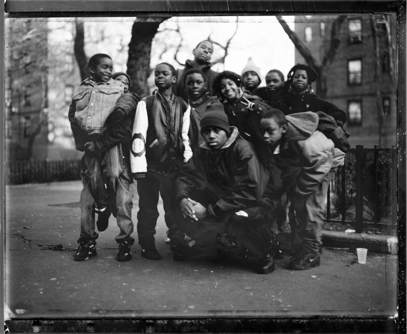

- Complete name: Nasir Bin Olu Dara Jones.
- Birthday: September 14, 1973.
- Hometown: Queensbridge, New York.
Nasir Bin Olu Dara Jones.
"Time is Illmatic"

Nas with Queensbridge kids.
Nas timeline
- From Nasir to Nasty to Nas - in 1991, rapping as Nasty Nas, he made a stunning debut with a guest verse on "Live at the Barbecue" by Main Source. Nas’ verse was a seamless melding of his writing skills and his street knowledge. The track was produced by Large Professor, who subsequently produced many of Nas’ early demos and continued to work with him throughout his career. In the wake of "Barbecue," Nas was asked to contribute to the soundtrack for the film Zebrahead — a sort of hip-hop Romeo and Juliet set in Detroit — and the resulting song, "Halftime," another collaboration with Large Professor, became his debut single in 1992, and would also appear on his debut album, Illmatic, two years later.
- 'Illmatic' Makes Nas a Legend - Illmatic was released in April 1994, and it landed at No. 12 on the Billboard pop chart and No. 2 on the R&B chart. Featuring production from the cream of the East Coast — DJ Premier, Large Professor, Q-Tip, Pete Rock and LES — it was a piece of perfection that was acknowledged as a classic far and wide. Its vivid depiction of inner-city New York, its multi-syllabic wordplay and its stellar beats ensured the album didn’t flag from beginning to end. The hip-hop bible The Source magazine gave it a rare 5 mics rating.
- 'Nastradamus' Release, Feud with Jay Z - In 1999, Nas’s output continued to combine commercial singles with more experimental and street fare. He also created the persona of Nas Escobar for his more gangster and crime-rhyme influenced verses. First up was "I Am…," which hit No. 1 on both the pop and R&B charts, fueled by singles including "Nas Is Like" and "Hate Me Now," featuring Sean “Puffy” Combs. Later that year, Nas released Nastradamus, which peaked at No. 7 on the pop chart and No. 2 on the R&B chart.
- Keeping Hip Hop Alive Through 'Hip Hop Is Dead' - All the while, Nas kept the albums coming, God's Son (2002) was hailed as his one of his best yet. The Salaam Remi-produced single "Made You Look" became a hardcore hip hop smash that still packs club dancefloors today. This was followed by the double album Street Disciple (2004) and Hip Hop Is Dead (2006), both of which underscored Nas’ status as one of his generation’s top rappers. Hip Hop Is Dead is notable for being Nas’ first release on Def Jam Records, whose president at the time was his former rival Jay Z. The two even collaborated on the track "Black Republican." Untitled in 2008 was originally going to be called Nigger, until protests persuaded Nas to change it.
Interesting Facts About Nas:
- Nas first rap name was Kid Wave. He later dropped it and picked up the moniker Nasty Nas.
- His first collaboration with Kanye West, "We Major," was became Jay-Z's favorite song on Late Registration.